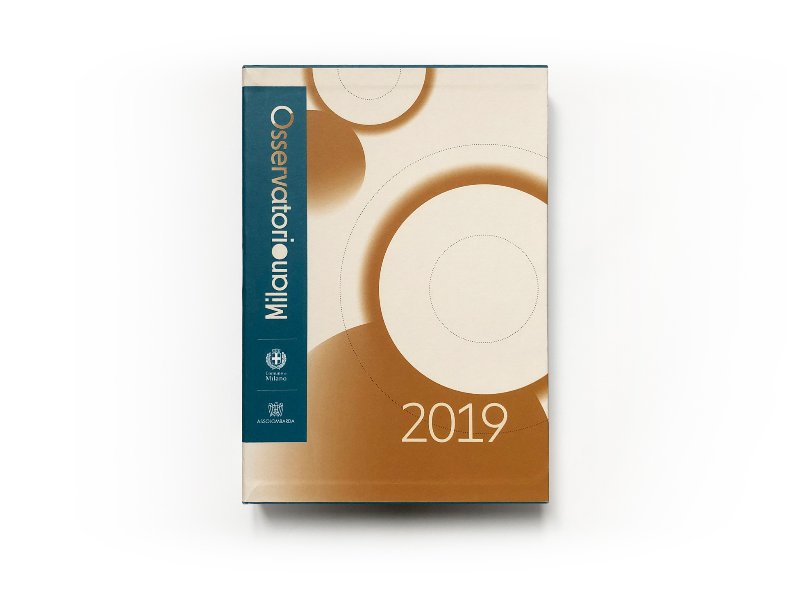
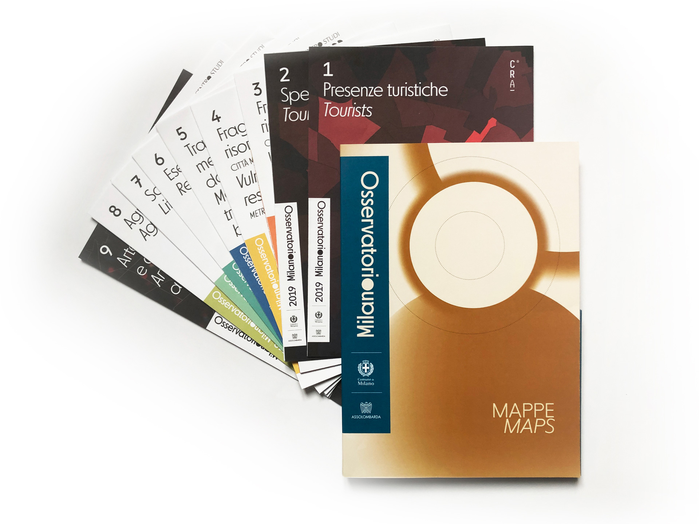
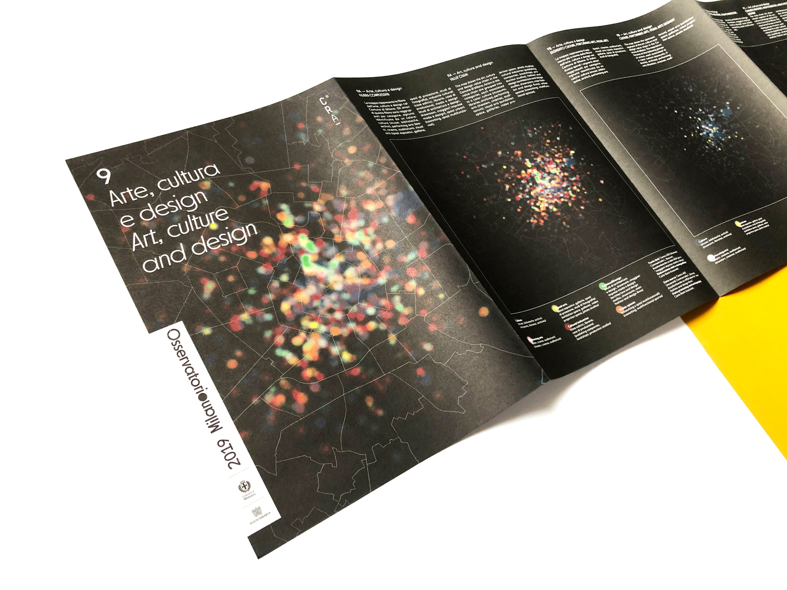
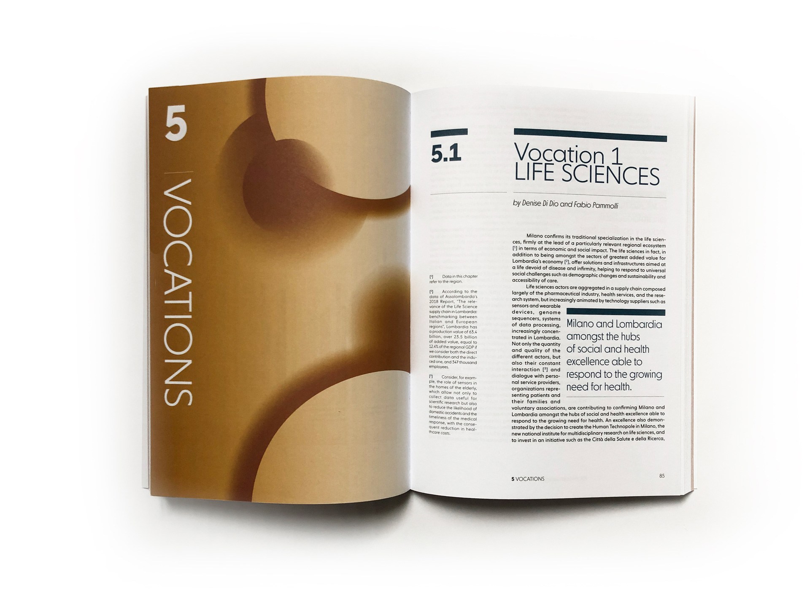
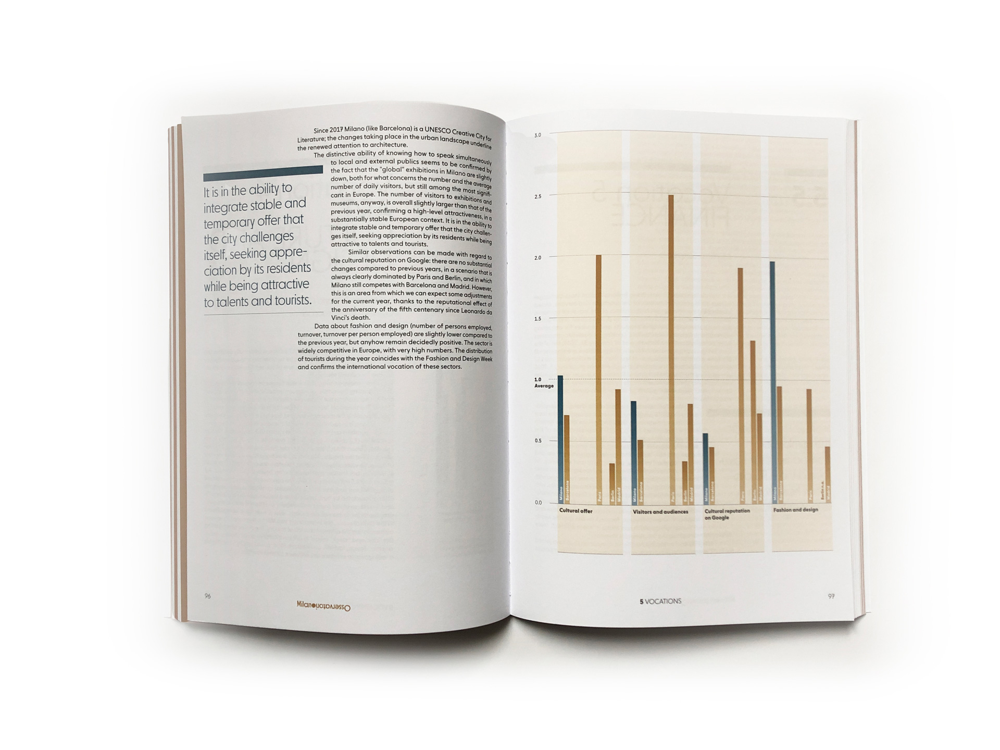

For the second consecutive year we created the visual identity of Osservatorio Milano, a project of Assolombarda developed together with Comune di Milano.
We revisited how to describe a city, how to recall its personality in a recognizable way and, specifically, how to present data, numbers and insights related to Milan. We started from the idea of the main visual: circular shapes, that recall the urban structure of Milan, aligned in a dynamic way and in different sizes on all the project materials. The circular shape of these elements also appears in the title of the volume, with a full “o” linking the words “Osservatorio” and “Milano”, written end-to end and vertically.
From a chromatic point of view we proposed the combination of two colors: ochre and petroleum blue.
As well as the main volume, we curated the graphic of 9 maps inserted in a separate folder. Each map analyses and spatially displays some of the most important phenomena examined by the report.
We revisited how to describe a city, how to recall its personality in a recognizable way and, specifically, how to present data, numbers and insights related to Milan. We started from the idea of the main visual: circular shapes, that recall the urban structure of Milan, aligned in a dynamic way and in different sizes on all the project materials. The circular shape of these elements also appears in the title of the volume, with a full “o” linking the words “Osservatorio” and “Milano”, written end-to end and vertically.
From a chromatic point of view we proposed the combination of two colors: ochre and petroleum blue.
As well as the main volume, we curated the graphic of 9 maps inserted in a separate folder. Each map analyses and spatially displays some of the most important phenomena examined by the report.